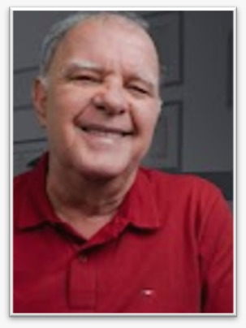

Grupo de Estudos da Teoria Freudiana
O INPSI está em parceria com a Sociedade Psicanalítica de Angra dos Reis (RJ) através do seu fundador, o psiquiatra e psicanalista há mais de 40 anos, Prof. Dr. Leonardo Ferreira de Azevedo e Silva. Visando o estudo da Psicanálise e revisitando as obras de seu fundador, Sigmund Freud, realizaremos um grupo de estudos gratuito, com encontro mensal, em uma plataforma online.
Os encontros são abertos para profissionais e estudantes psis, bem como a todos os interessados, visando propagar a transmissão do conhecimento psicanalítico, tornando-o mais acessível.
Grupo de Estudos da Teoria Freudiana, às quartas-feiras, 19h30.
Canal no Youtube Dr. Leonardo Ferreira de Azevedo e Silva.
Site com livros: https://doutorleonardoazevedo.com/.
Datas já definidas:
- 17.06 - Cinema & Psicanálise
- 01.07 - História do Movimento Psicanalítico
- 05.08 - Três ensaios para uma teoria da sexualidade
- 02.09 - Para além do princípio do prazer
- 07.10 - O Ego e o Id